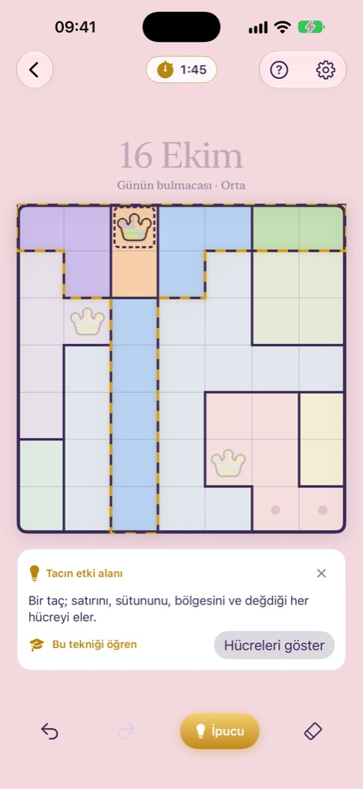
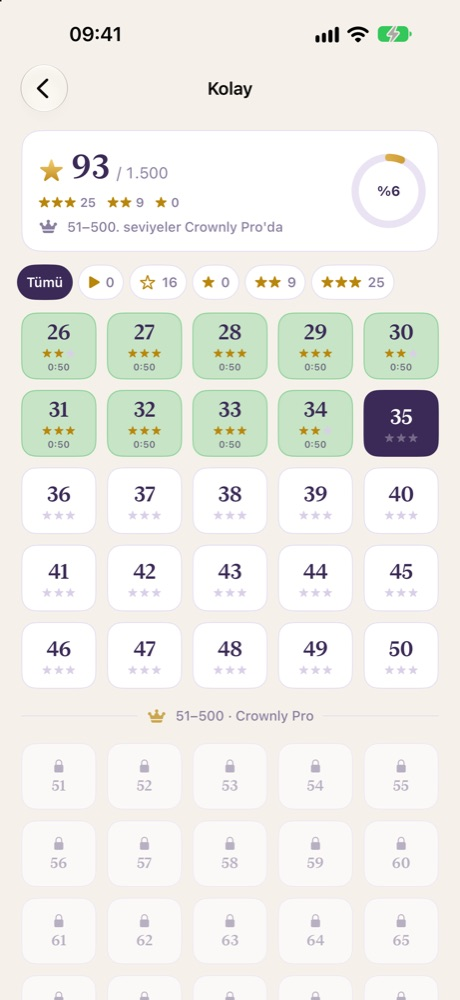
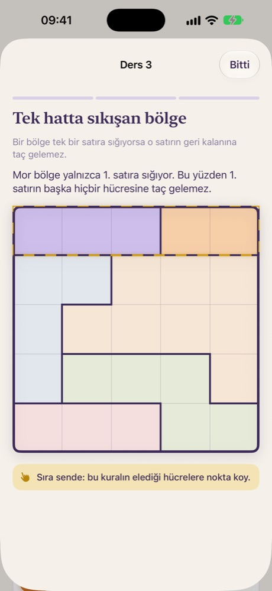
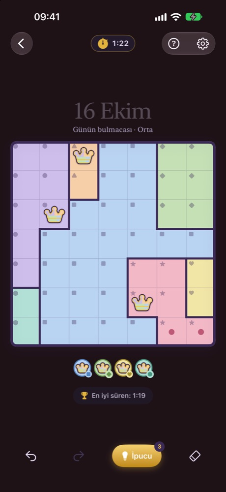

Nasıl oynanır
Üç kural. Saf mantık.
- 1Her satırda ve her sütunda bir taç.
- 2Her renkli bölgede bir taç.
- 3Taçlar birbirine dokunmaz, çapraz da olsa.
Bir dokunuş nokta, iki dokunuş taç; sürükleyerek birçok hücreyi işaretle. Her bulmacanın tek çözümü var, hiç tahmin etmen gerekmez.

Öğreten ipuçları
Takıldın mı? İpucu cevabı söylemez.
Yerleşik çözücü sıradaki mantıklı adımı bulur ve neden işe yaradığını sade bir dille anlatır. Bir kez sor fikri gör, bir daha sor hücreleri gör.
Günlük ritüel
Her gün yeni bir bulmaca. Herkese aynı.
Tüm dünyaya aynı günün bulmacası ve cesurlar için 10×10 Günlük Zor. Serini büyüt; yoğun günlerde seri dondurma seni korur.

2.000 seviye
İlk tacından Uzman'a.
6×6'dan 10×10'a Kolay, Orta, Zor ve Uzman tahtalar. İpucusuz ve süreyi geçmeden çöz, üç yıldızı kap.

Mantık okulu
Her tekniği öğren.
Altı kısa, etkileşimli ders her tahtayı çözen püf noktalarını adım adım öğretir.

Herkes için
Renkleri ayırt etmen gerekmez.
Renk körü modu her bölgeye bir sembol ve kalın sınırlar ekler. Koyu tema, büyük yazı ve Hareketi azalt tam desteklenir.
Kutla
Bugün nasıl geçti, gör.
Game Center sıralamaları, 16 başarım, ana ekran ve kilit ekranı widget'ları, süreni paylaşmak için spoiler'sız kart.
Adil olsun diye tasarlandı.
Günlük bulmacalar her zaman ücretsiz. Oyunun ortasında reklam yok, takip yok, internetsiz oynanır. İsteğe bağlı, tek seferlik Crownly Pro tüm seviyeleri, sınırsız ipucunu ve bulmaca arşivini açar.
Destek
Bir hata mı buldun, bir fikrin ya da sorun mu var? Bize hyapps@outlook.com adresinden yaz. Uygulamada Ayarlar → Geri bildirim gönder de kullanabilirsin; uygulama sürümünü ve cihazını ekler.
Günün bulmacası ne zaman değişir?
Yeni günlük bulmaca her gün 07:00 UTC'de (Türkiye saatiyle 10:00) dünyanın her yerinde aynı anda çıkar.
Telefon değiştirirsem ilerlemem kaybolur mu?
iCloud eşitleme açıksa (Ayarlar → Genel) çözdüğün bulmacalar, yıldızların ve serin özel iCloud hesabın üzerinden diğer cihazlarına aktarılır. iCloud kapalıysa ilerlemen yalnız bu cihazda saklanır ve uygulamayı silince silinir.
Crownly Pro'yu nasıl geri yüklerim?
Satın aldığın Apple hesabıyla giriş yapmışken Ayarlar → Crownly Pro → Satın alımları geri yükle'ye dokun. Pro, Aile Paylaşımı grubunla da paylaşılır.
Bir günü kaçırdım. Serim gitti mi?
Her zaman değil. Bir günü kaçırınca seri dondurma otomatik kullanılır (ayda bir, Pro ile üç).
Bazı renkler bana birbirine benziyor.
Ayarlar → Oyun'dan Renk körü modunu aç. Her bölgeye kendi sembolü eklenir ve sınırlar kalınlaşır; renkleri ayırt etmen gerekmez. Yüksek kontrast tahta paletini de deneyebilirsin.